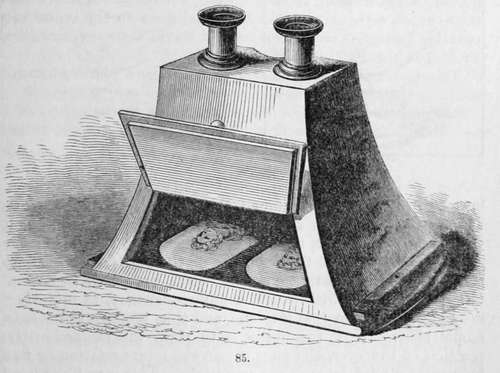
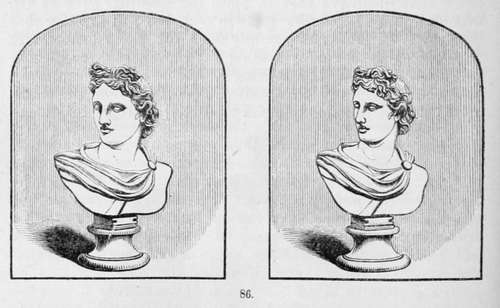
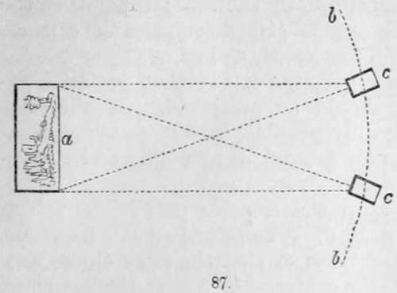

The Stereoscope. Part 2
Description
This section is from the book "A Manual Of Photography", by Robert Hunt. Also available from Amazon: A Manual of Photography.
The Stereoscope. Part 2
The lenticular instrument, fitted for use, is shown in figure 85; it consists of a frame of wood or metal: the two semi-lenses are fixed in brass tubes, which are capable of being adjusted to accommodate the differences of sight in different individuals. At the bottom of the box, as seen through the opening, are placed the two stereoscopic pictures, which may consist either of diagrams, similar to those already represented, or of images taken by the daguerreotype, talbotype, or collodion processes. These photographic processes enable us to obtain such copies of external nature as are required to produce the magical results with which the stereoscope renders us familiar. It is required to take two pictures of a single object, at such a difference of angle as will produce the solidity which is evident in ordinary binocular vision, as the result of viewing two dissimilar images, under certain conditions, on a plane surface.
The two accompanying figures represent a bust as viewed by each of the two eyes singly. If the experiment is tried upon a bust or statue, it will be found that one eye will see surfaces which are invisible to the other. Thus in these examples it will be quite apparent, upon examination, that the line of the cheek is more distant from the line of the nose in one than in the other image, and that a similar inequality exists in several other parts. By a little practice, any reader may, by squinting, resolve these two images into one, and thus produce the stereoscopic effect. Now the object is to place the camera in the position of the eyes, and thus obtain the representation of two images, as viewed by each eye separately. This may be effected with a single camera, by adjusting it at a certain measured distance from the object to be copied, and having obtained one picture, move it round about twenty degrees, and take the second image, a may represent the object to be copied, b being the distance at which the camera c is placed, which is, say 100 feet from the point a; the picture from this point being taken, the camera is moved round, still preserving the same distance from the object by means of a cord attached to the camera obscura, or by measuring the space. Two cameras with lenses of the same focal length may be employed, and are indeed employed, by M. Claudet and others, for the purposes of obtaining stereoscopic portraits, and it is found that with lenses of the same focus, the figures are sufficiently exact for all practical purposes, and produce the most perfect stereoscopic pictures. Sir David Brewster contends that it is not practicable to obtain sufficient exactness by either of these methods. He therefore proposes the use of a binocular camera, which he thus describes : — "In order to obtain photographic pictures mathematically exact, we must construct a binocular camera, which will take the pictures simultaneously, and of the same size; that is, a camera with two lenses of the same aperture and focal length, placed at the same distance as the two eyes. As it is impossible to grind and polish two lenses, whether single or achromatic, of exactly the same focal lengths, even if we had the very same glass for each, I propose to bisect the lenses, and construct the instrument with semi-lenses, which will give us pictures of precisely the same size and definition. These lenses should be placed with their diameters of bisection parallel to one another, and at a distance of 2 1/2 inches, which is the average distance of the eyes in man ; and when fixed in a box of sufficient size, will form a binocular camera, which will give us, at the same instant, with the same lights and shadows, and of the same size, such dissimilar pictures of statues, buildings, landscapes, and living objects, as will reproduce them in relief in the stereoscope".
Rules For Taking Stereoscopic Views Of Landscapes
If the nearest object be distant 50 feet, arrange the two cameras perfectly horizontally, and parallel to each other, placing them 2 feet apart, measured from the centre of each lens.
Let the distance between them (measured in this way), be always directly proportionate to the distance of the nearest object, which must be determined by the tape; thus, when the object is twice the above distance off (100 feet), place the cameras 4 feet apart; for 150 feet, 6 feet apart, and so on.
For trees it does not seem very important that perfect horizontality of the cameras should be preserved. If they are arranged horizontally, it is only possible, in very peculiar situations, to avoid making the foreground disagreeably and disproportionately large.
Mr. Fenton does not keep the cameras parallel in taking landscapes; but, observing Prof. Wheatstone's rule, as above, respecting distances, inclines them so that the same object may occupy as nearly as possible the centre of each ground-glass plate.
Extraordinary relief of distant objects may be obtained by arranging the cameras with special reference to them. Thus, views taken across the Thames, by placing the cameras 12 feet apart, produce an astonishing effect. In such views, of course, no near objects must be admitted.
Horizontal position of the cameras is absolutely necessary when buildings are taken; otherwise, when viewed in the stereoscope placed horizontally, they appear to be falling over.
There appears but one objection to the binocular camera of Sir David Brewster, and that is one arising from the circumstance of employing really the very worst portion of the lens ; i.e., the two sides. This, however, in practice is not found to be of any disadvantage; the images are sufficiently perfect, although not so absolutely correct as those formed by the centre of the lens, and they are certain of being resolvable into a distinct image of three dimensions.
Continue to: